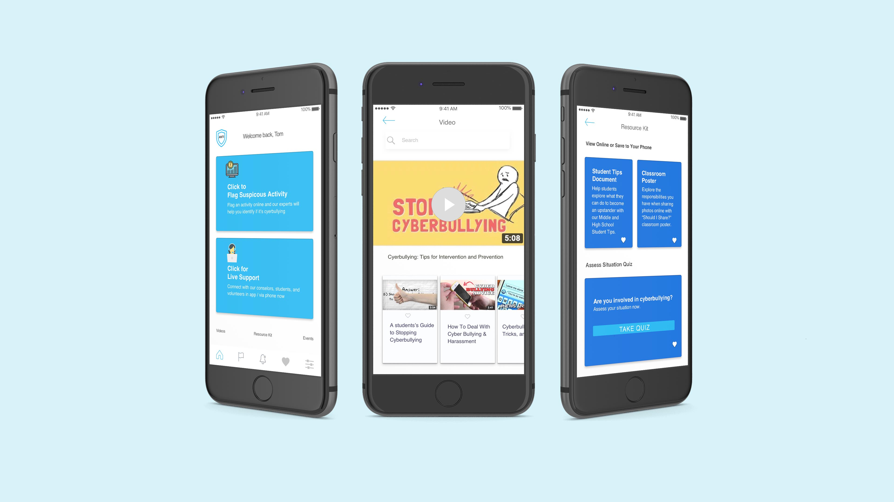
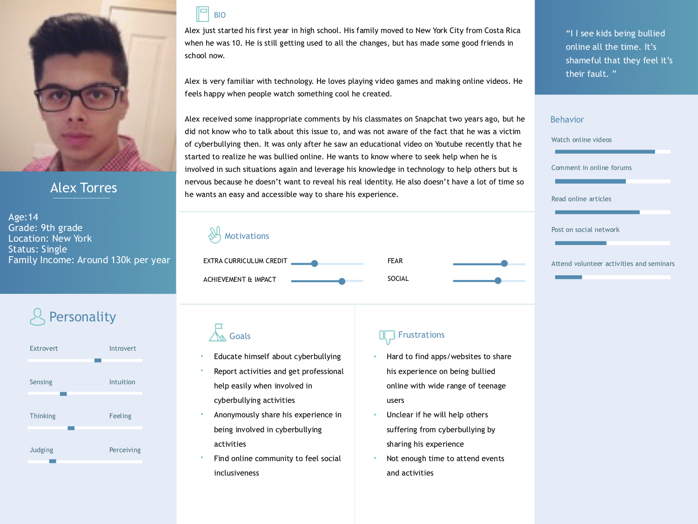
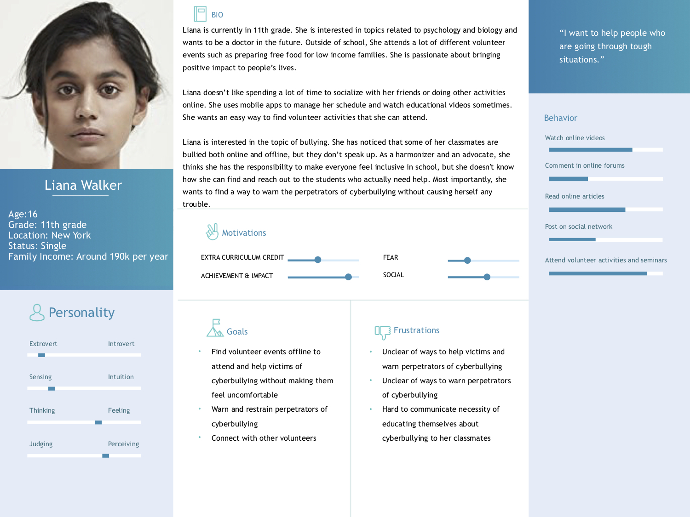
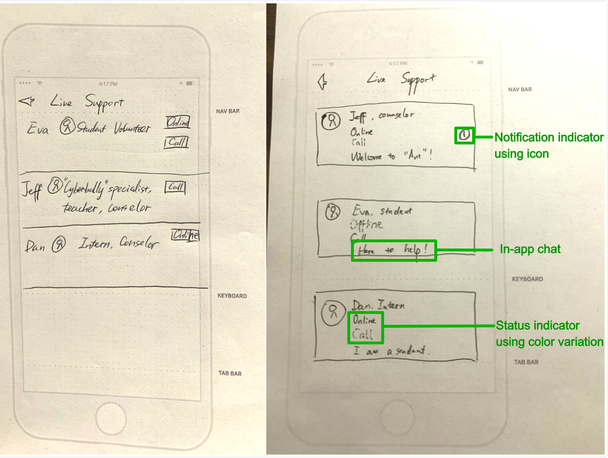
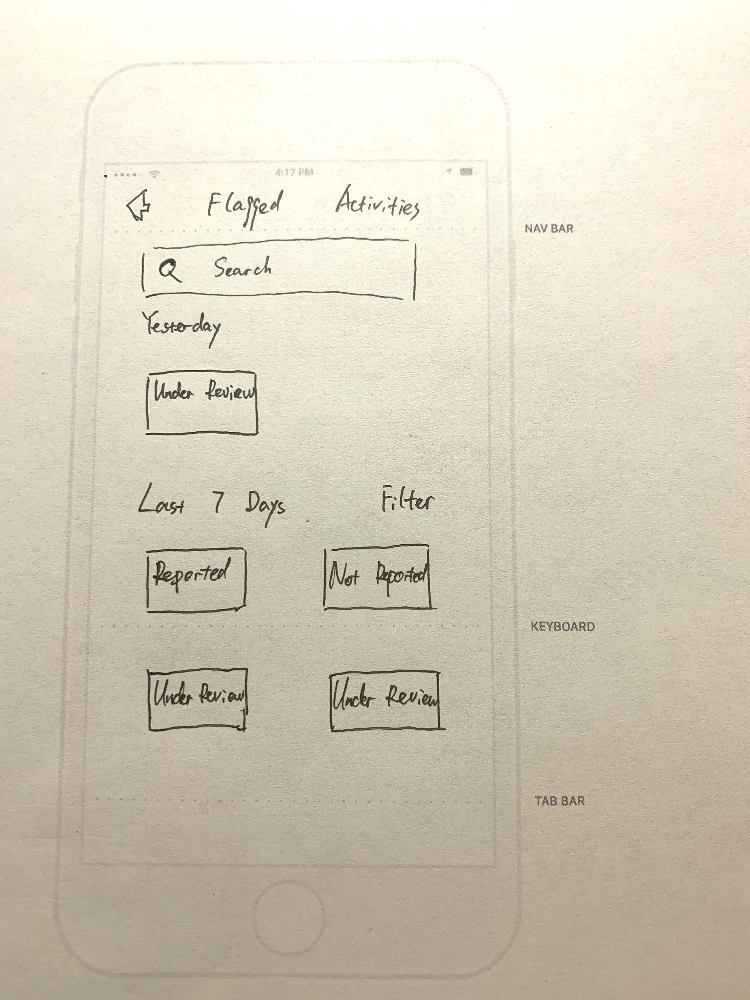
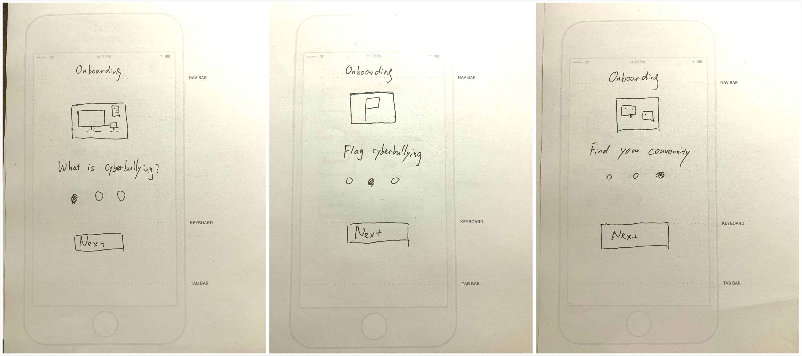
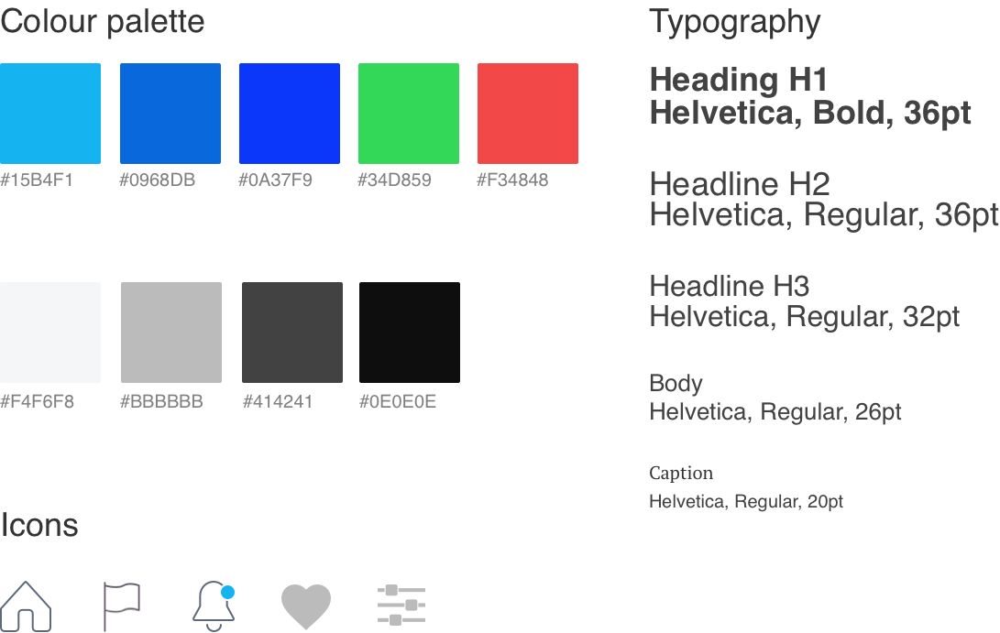

Designing Anti, a mobile app that helps teens report and recover from cyberbullying
A self-guided mobile app providing everything a young person needs to prevent cyberbullying: flagging a case, learning about the topic at their own pace, and attending community events — without having to expose themselves to the wider public first.
My contribution
Role: UX/UI designer · Researcher · Prototyper. An individual project — I owned every feature from conception and research through visual design.
Tools: Sketch · Marvel · Keynote · Adobe Color Method: Lean UX
The problem
Online violence causes lifelong damage to its victims because the perpetration continues through the online social space. But most young internet users involved in cyberbullying lack ways to protect themselves, because they're hesitant to report it to anyone who could help.
"Cyber-bullying is practically subterranean because it lives in the world of young people." — Belsey
Research & personas
I combined a literature review, an anonymous online survey, and in-person interviews with 10 middle and high school students (ages 13–17). Competitive analysis also showed that existing products target teachers and parents, not students, and bury cyberbullying help inside a wide range of unrelated content. The findings synthesized into two personas with different needs.


Alex, the hesitant prospect — wants to educate himself about cyberbullying, report activities and get professional help easily, and anonymously share his experience.
Liana, the volunteer — wants to find offline volunteer events to help victims without making them uncomfortable, and to warn and restrain perpetrators.
Key design features
Kids know there's a gap in technology understanding between themselves and their parents — their fear isn't just that a parent's response could make the bullying worse, but that the adults will take the technology away entirely. The question I kept asking: "How might we make users believe that using our product is different from talking to parents or teachers?" That led to four priorities: high privacy (get support without giving away a real identity), accessibility (a mobile app, since most target users are tech-savvy and short on time), simple, organized navigation (rather than a pile of undifferentiated resources), and a self-paced structure users can explore freely.
The solution
Anti is one simple mobile app that provides everything a young internet user needs to prevent themselves from cyberbullying — flagging a case, learning about the topic, and attending community events — with a self-guided approach instead of an educator's-eye-view, so hesitant users never have to expose their issue to the wider public before getting help.
Design process
I mapped a user flow for the core task — flag suspicious activity and learn more about cyberbullying without feeling exposed — then sketched a paper prototype and tested it with 5 users. Their feedback drove three redesigns: lighter/darker link colors in Live Support to show which counselors are actually online, Flagged Activities reorganized by time and status so past reports are easy to find, and a 3-step onboarding flow since users weren't clear what the app did at first glance. A UI style guide kept the visual language consistent before I built the high-fidelity prototype in Marvel.





Reflection
Keep it simple and straightforward. Ideation is my favorite part of the process, but I learned to stay focused on the actual problem — an in-app chat for connecting with volunteers added value for some users but was a distraction for others, so I cut it to keep the product simple.
Design for the users. Beyond interviews with students connected through professors at Teachers College, I also tested with my brother, a 7th grader in NYC. Listening to what users actually said — not just my original research questions — eliminated ideas like online forums early, and pointed the design toward privacy instead.